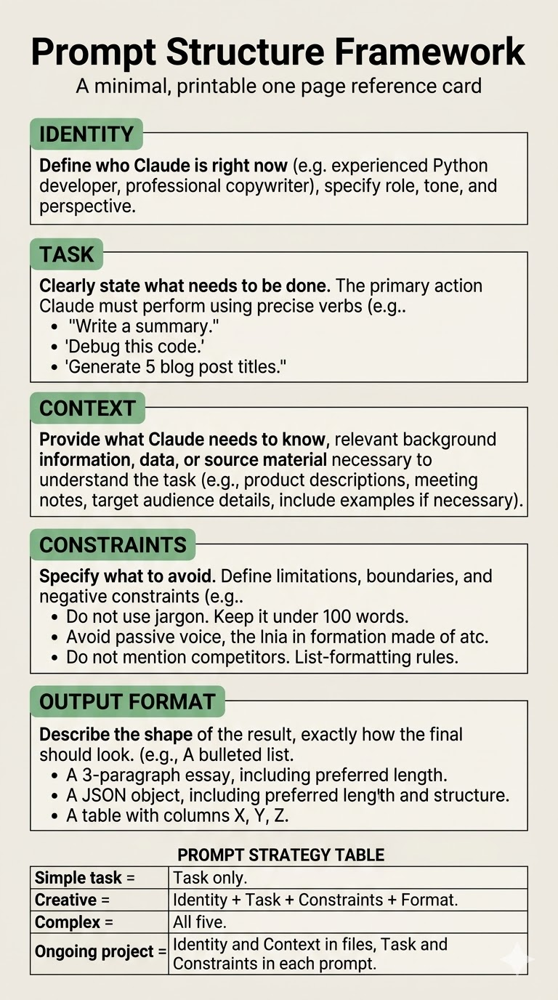

A comprehensive guide to Agentic Engineering
Your central navigation hub. Click any lesson to jump directly to the course materials.
The Stateful Baseline — before you type a single chat message, you must build your safety net.
The biggest mistake beginners make in Prompt Engineering is starting in the chat box. If you open a new chat and immediately type "Act like an expert coder," you have already failed.
To build autonomous, safe AI workflows, we use a 3-Tier Hierarchy for our prompts. The absolute first tier is the Application-Level Stateful Prompt. This involves adjusting the global settings within your AI application (like Google Antigravity, Claude Code, or ChatGPT's Custom Instructions) to set non-negotiable rules that apply to every single project you work on. This is your baseline identity and your ultimate safety net.
A professional "Stateful Prompt" is distributed across three levels:
AGENTS.md and CONTEXT.md inside a specific project folder to specialize the AI for that specific codebase.Modern LLM IDEs like Google Antigravity and Claude Code allow you to set global rules. These are usually stored in a root configuration folder on your hard drive (e.g., ~/.gemini/config/AGENTS.md).
By writing a rule here like "NEVER overwrite a file without making a copy in the Archive folder," you ensure that even if you write a terrible, dangerous prompt in Tier 3 (the chat box), the AI will refuse to destroy your data because the Tier 1 Application setting permanently overrides it.
In addition to safety rules, you can set your AI's default personality. If you prefer concise, jargon-free answers, you don't need to ask for it every time. Set a global rule: "Always write in plain, direct English. Never use corporate buzzwords." From that moment on, the AI's default "state" perfectly matches your vibe.
Identity: "You are an expert, senior-level AI pair programmer who communicates in concise, plain English."
Constraint: "Security Rule: You must always create a backup copy of a file before you run any command to modify it."
The 5-Part Framework — the core lesson on structuring instructions to get useful results on the first try.
The difference between a frustrating AI experience and a magical one usually comes down to one thing: structure. Most people treat AI like a search engine or a text message conversation. They write things like:
"Write a blog post about AI."
This is called an Unstructured Prompt. It forces the AI to guess who it is, who the audience is, what the tone should be, and what the final product should look like. When you force an AI to guess, it resorts to average, generic training data.
To eliminate guesswork and get production-ready results on the first try, we use the 5-Part Prompt Framework.
Who is the AI right now? Before you ask the AI to do anything, you must tell it what "role" to play. This anchors the model, narrowing down its trillions of parameters to focus only on the tone and knowledge relevant to that persona.
What exactly needs to get done? Define the action, the scope, and the specific details of the request. Be as explicit as possible.
What background information does the AI need to know? The AI doesn't know your business, your current project, or your target audience unless you tell it. Context bridges the gap between the AI's general knowledge and your specific situation.
What should the AI avoid doing? This is the most frequently skipped, yet most valuable step. Telling an AI what not to do is often more powerful than telling it what to do. It establishes the "guardrails" for the task.
What should the physical result look like? If you want a table, ask for a table. If you want a markdown file, ask for a markdown file. If you don't specify the format, the AI will guess (and usually default to a wall of text).
The 5 parts above are listed in the order you should type them. This sequence is not arbitrary — it is grounded in how transformer-based LLMs process information at inference time.
The Outside-In Logic. Each element narrows the model's interpretation space before the next one adds detail:
| Order | Element | Why it goes here |
|---|---|---|
| 1 | Identity | Establishes role before the model reads anything else. Every subsequent token is weighted against this frame. |
| 2 | Task | States the goal while the identity is fresh — the model now scans everything that follows with purpose. |
| 3 | Context | Background material is interpreted through the combined lens of role + task simultaneously, not neutrally. |
| 4 | Constraints | Applied to a solution the model is already forming, making guardrails more binding than if placed earlier. |
| 5 | Output Format | A final narrowing at the moment of generation — collapses the solution space last, not first. |
LLMs do not read prompts linearly — they weight tokens by position. A landmark study by Liu et al. (2023), published in Transactions of the Association for Computational Linguistics, demonstrated that models perform 15–25 percentage points worse when critical information is placed in the middle of a long context. Accuracy holds at the start and end of the context window but collapses in the middle — a U-shaped performance curve.
The root cause is structural. The attention mechanism in modern transformers uses Rotary Position Embedding (RoPE), which causes attention scores to decay naturally for tokens far apart in the sequence. Initial tokens accumulate attention influence across every subsequent layer — a phenomenon called attention sinks. Earlier tokens carry disproportionately more interpretive weight.
Source: Liu et al., "Lost in the Middle: How Language Models Use Long Contexts." Transactions of the Association for Computational Linguistics, 2024. arXiv:2307.03172.

Prompt Strategy Table — a quick reference guide for when to use which elements:
| Task Type | Required Prompt Elements |
|---|---|
| Simple task | Task only. |
| Creative | Identity + Task + Constraints + Format. |
| Complex | All five. |
| Ongoing project | Identity and Context in files, Task and Constraints in each prompt. |
[Identity] You are a friendly but direct Technical Project Manager.
[Task] Write an email to the engineering team announcing the successful deployment of the v2.0 software update.
[Context] The team has been working overtime for three weeks to get this done, and morale is a bit low. This update fixes the critical database latency issues we've been experiencing for the past month.
[Constraints] Do not make the email longer than three short paragraphs. Do not focus on future bugs or upcoming sprints; only celebrate the current win.
[Output Format] Format the output with a clear Subject Line, use bullet points to highlight the 3 key features included in the update, and include a professional sign-off.
Because asking an AI to do everything at once is a guaranteed recipe for failure.
Imagine handing a brand-new intern a 50-page manual, pointing to a computer, and saying, "Build the entire marketing campaign, write the code, and deploy the server by noon." They would freeze.
AI models react the exact same way. When you try to cram a massive project into a single prompt, the AI gets confused, loses context, and hallucinates. To get high-quality work, we use a technique called Chunking. Chunking is the art of breaking massive, complex problems down into small, sequential, easily solvable steps.
Instead of asking for the final product immediately, ask for the blueprint first. For example, if you want the AI to write a comprehensive business report:
By chunking the task, you maintain total control over the direction and quality at every stage. If the AI makes a mistake in Step 1, you fix it immediately, rather than waiting for it to ruin a 20-page document.
AI models have "Token Limits" — a maximum amount of text they can "remember" at one time. If you paste a 300-page PDF into the chat, the AI will likely "forget" the beginning of the document by the time it reaches the end.
If you have massive datasets, break them down. Feed the AI one chapter, one module, or one specific data table at a time. Process the chunk, save the result, and move on to the next one.
When feeding data to an AI, unstructured text (like a messy email thread) consumes far more tokens and processing power than structured data.
Whenever possible, force your data into tabular formats (like Markdown tables, CSVs, or JSON). This is a form of structural chunking that drastically reduces token usage and helps the AI "see" the relationships between data points, severely reducing hallucinations.
Prompt 1 (The Outline): "You are an expert author. Draft a 5-chapter outline for an e-book titled 'The Future of Remote Work.' Provide bullet points for what each chapter will cover."
Prompt 2 (The Draft): "Great. Using that exact outline, please write the Introduction and Chapter 1. Keep the tone engaging and professional."
Prompt 3 (The Continuation): "Perfect. Now, maintaining that exact same tone, write Chapter 2 and Chapter 3."
The Folder Architecture — stop repeating yourself and let your file system do the heavy lifting.
If you are constantly copy-pasting the same instructions ("You are an expert coder," "Write in plain English," "Don't use corporate jargon") into every single chat window, you are wasting an enormous amount of time and token bandwidth.
This repetitive cycle is a symptom of Stateless Prompting. The AI essentially has amnesia; it forgets who it is the moment you close the browser tab.
The ultimate evolution of prompt engineering is Stateful Prompting. Instead of writing massive paragraphs in the chat box, we offload all of our static, unchanging instructions directly into the project's file structure. By turning the physical environment into the prompt, your daily chat instructions become incredibly fast, reliable, and lightweight.
AGENTS.md)Instead of telling the AI who it is in the chat box, we create a file called AGENTS.md in the root of our project. Inside this file, we define the AI's exact persona and set non-negotiable global rules (e.g., "Always backup files before editing"). Because modern AI agents read the workspace files automatically, its identity is permanently locked in before you even type a single word.
CONTEXT.md & MEMORY.md)You shouldn't have to re-explain your business goals, target audience, or tech stack every time you start a new task.
CONTEXT.md to permanently store the project's background and definitions of "what good looks like."MEMORY.md to store dynamic, learned constraints over time (e.g., "We learned yesterday that the system breaks if we use commas in the CSV. Never use commas").skills/ Folder)The most powerful element of Stateful Prompting is the skills/ folder. Instead of typing out a complex, 5-step workflow every time you want to do a repetitive task, we package that workflow into a single SKILL.md file.
When you need that workflow done, you simply type: "Run the blog-post-writer skill." The AI reads the local file, loads the 5-step process into its context, and executes it flawlessly.
Because 80% of your prompt (Identity, Context, Constraints) is now handled autonomously by the file system, your actual chat messages become "Thin Prompts." You only need to provide the immediate Task and the desired Output Format.
Example Thin Prompt:
Look at draft.txt. Find the three spelling errors. Output the fixes in a markdown table.
This folder architecture isn't just a stylistic preference; it is the 2026 industry standard for Agentic Engineering, backed by empirical data from frontier AI labs:
AGENTS.md and CONTEXT.md anchors the transformer's attention blocks, achieving a 100% execution pass rate compared to the ~53% success rate of unstructured "vibe coding."CONTEXT.md) with near-perfect accuracy, provided it is structured efficiently.skills/ directory implements Anthropic's "Least-to-Most Prompting." By breaking large problems into sequence-specific files, you drastically reduce token consumption (by roughly 40%) and cognitive drift.MEMORY.md file mirrors the philosophy behind Andrej Karpathy's "LLM-Wiki Pattern." Instead of the AI starting from zero every session, it actively compiles learned constraints into a persistent knowledge graph.1.
AGENTS.md: "You are a senior Python data engineer. Global Rule: Never write code without writing unit tests first."2.
CONTEXT.md: "We are building a Python web scraper to pull daily pricing data from competitor websites for our enterprise e-commerce client."3.
MEMORY.md: "Decision Log: The client's server crashed when we used Scrapy. We must always use the BeautifulSoup library moving forward."4.
TASKS.md: "Active Sprint: 1. Build the HTTP request function. 2. Build the HTML parser. 3. Build the CSV export function."
Because giving an autonomous AI unrestricted access to your files is a terrible idea.
As you transition from casually chatting with an AI in a browser window to granting it read/write access to your local file system, the stakes become exponentially higher. You are no longer just dealing with "bad text outputs" — you are dealing with the potential for deleted data, corrupted repositories, and leaked API keys.
To safely build alongside autonomous agents, you must adopt a strict Information Security (InfoSec) mindset. Specifically, you must integrate the core InfoSec triad directly into your prompt engineering: Confidentiality, Integrity, and Availability (The CIA Triad).
Never upload .env files, hardcoded API keys, or proprietary client data into an AI's context window.
When building your CONTEXT.md files or running skills, ensure you are utilizing .gitignore files aggressively. If you must feed an AI a script that contains sensitive data, you must explicitly instruct it to use placeholder variables (e.g., API_KEY="insert_key_here") and redact the real keys before passing the text to the model.
Integrity means ensuring your files are not unintentionally altered, corrupted, or deleted by an over-eager AI hallucination.
This is exactly why our AGENTS.md file must contain a strict Global Rule: "Never modify a file without backing it up first." Before the AI executes a command to rewrite a massive code file, it must be forced to duplicate that file into an Archive/ folder. This guarantees you always have a pristine copy of the project's exact state before the AI intervened.
Availability ensures that your project history and decisions are always accessible and auditable.
If an AI goes rogue or breaks a feature, you need to know exactly what it did and why it did it. By maintaining a HISTORY.md file inside your Archive/ folder, you force the AI to document every action it takes. If something breaks, you don't have to guess what happened — you just read the audit log.
Using the CIA Triad (Confidentiality, Integrity, Availability), write out the three critical InfoSec violations in this prompt.
1. Confidentiality Violation: Passing root AWS credentials into the AI's context window. The keys should have been redacted or hidden locally in a
.envfile.2. Integrity Violation: Instructing the AI to "immediately overwrite the existing file" without asking for a backup or creating a duplicate in an
Archive/folder first.3. Availability Violation: Deploying and testing unverified, AI-generated code directly on a "live server" instead of a sandboxed testing environment, risking massive system downtime.
It's time to put the theory into practice. Your objective is to successfully configure the 3-Tier Hierarchy and execute a coding task without writing a massive, monolithic chat prompt.
You need to write a simple Python script (expense_calculator.py) that reads a .csv file of expenses and prints the total sum.
However, the goal is not the code itself. The goal is the architecture.
New Project folder template from the root of this repository and rename it to Expense_Calculator.Expense_Calculator/AGENTS.md, write your project identity:
"You are an expert Python data analyst. You write clean, concise Python scripts."
Expense_Calculator/CONTEXT.md, document the tech stack and data layout:
"We are working with native Python. The data will be stored indata/expenses.csvwith columns:Date, Category, Amount."
Open your AI chat interface inside the Expense_Calculator folder.
Instead of typing a giant paragraph explaining who the AI is, what the data looks like, and what the safety rules are, type your Thin Prompt:
"Please create theexpense_calculator.pyscript to read the data and print the total sum. Output the script as a complete code block, and generate a dummydata/expenses.csvfile for testing."
You pass this capstone if:
CONTEXT.md (e.g., placing the CSV in the data/ folder).Archive/ folder because of your Tier 1 App Setting.The skills/ Directory — how to save your best Thin Prompts as reusable, automated scripts.
Once you have mastered the 3-Tier Hierarchy, you will find yourself typing the same Thin Prompts repeatedly. For example: "Please lint this file and format the output as a diff block."
Instead of typing that every time, we can package that workflow into a reusable script. In the Vibe Coding framework, we call this a Skill.
A Skill is essentially a pre-packaged Task and Output Format. It is a Markdown file (usually named SKILL.md) placed inside a skills/ directory in your project root.
A well-written skill file follows the Agent Skills Open Specification (adopted by Anthropic, OpenAI, and Microsoft). It contains two main parts:
name: The unique identifier (e.g., lint-code).description: What the skill does and what triggers it.when_to_use: (Optional) Specific scenarios when the agent should activate this skill.skills/lint-code/SKILL.md
--- name: lint-code description: Lints the provided file and outputs a diff block of fixes. --- ## Instructions 1. Run the project's linter on the target file. 2. Identify any syntax or style errors. 3. Output the required fixes exclusively in a GitHub-flavored Diff block. Do not apply the fixes automatically.
Once the file is saved, you no longer need to type the instructions. Your chat prompt simply becomes the invocation:
"Run thelint-codeskill onapp.py"
The AI will locate the skill file, read its instructions, and execute the exact workflow you designed.
skills/ folder in your project. Inside, create a folder named summarize-logs, and inside that, create a SKILL.md file. Write the YAML frontmatter and a 3-step instruction set for reading a log file and summarizing the errors in a table.File: skills/summarize-logs/SKILL.md
--- name: summarize-logs description: Reads a local .log file and outputs a summary of errors. when_to_use: Run this when the user asks to "check the logs" or "summarize errors". --- ## Instructions 1. Read the provided log file. 2. Identify any lines containing the words "ERROR" or "FATAL". 3. Output the exact error messages and their timestamps into a GitHub-flavored Markdown table.
Sub-Agents — how to build a team of specialized AI workers to execute tasks in parallel.
A single chat thread has limits. If you ask an AI to research an API, rewrite a massive database schema, and update the UI all in one prompt, you will hit context limits, trigger hallucinations, and lose track of the workflow.
The solution is Agentic Delegation. Instead of doing the work itself, your primary AI acts as a manager, spinning up "Sub-Agents" to handle chunked tasks in the background.
When you use an advanced LLM interface (like Google Antigravity), your primary chat thread is the Manager. Its job is to understand your overall goal, plan the architecture, and orchestrate the work.
When a specific, isolated task needs to be done, the Manager invokes a Worker (a Sub-Agent) in a completely separate context window.
You can instruct your AI to spawn sub-agents simply by asking. Because of your 3-Tier Hierarchy, you only need a Thin Prompt:
"Please spawn a research sub-agent. Have it read the Stripe API documentation and summarize the authentication endpoints in a markdown artifact."
The greatest benefit of sub-agents is asynchronous execution. You can spin up three different agents to research three different files simultaneously. While they work in the background, your primary chat remains unblocked, allowing you to continue writing code or planning the next steps.
"Please spawn a research sub-agent in the background. Instruct the sub-agent to search the entiresrc/directory for any lines containing the word 'TODO'. Have the sub-agent output the results as a checklist in a new file calledTODO_List.md. Please let me know when it finishes so I can review it."
Combine everything you've learned to build an automated, agentic workflow.
You need to build a reusable Skill that automatically lints and formats a file, and then instruct a Sub-Agent to execute that skill across multiple files in the background.
New Project folder, navigate to the skills/ directory.auto-formatter.SKILL.md file inside auto-formatter/."1. Read the target file. 2. Identify syntax errors or messy formatting. 3. Automatically apply fixes and save the file. 4. Output a summary of what was changed."
"Please spawn a sub-agent. Instruct it to run the auto-formatter skill on both of my dummy text files. Let me know when it finishes."
You pass this capstone if:
SKILL.md file.How to program an AI to autonomously document its failures and learn from them.
One of the most frustrating experiences in Prompt Engineering is correcting an AI, only for it to make the exact same mistake the next day. If an AI doesn't have a system to learn from its failures, you are essentially training a goldfish.
In Lesson 4, we introduced the MEMORY.md file as part of the Folder Architecture. Now, we will explore Dynamic Memory — the practice of instructing the AI to actively manage and update its own constraints based on what works and what doesn't.
MEMORY.md)Your MEMORY.md is not just a passive reference document; it is an active decision log. Every time you encounter a persistent bug, a framework limitation, or a stylistic preference change, it should be recorded here. A good memory entry should include:
Instead of updating MEMORY.md manually, you can instruct the AI to do it. When you finally solve a complex problem after multiple chat turns, you can issue a Thin Prompt to lock in the learning:
"We finally got the deployment script working. Please analyze why the previous three versions failed, extract the core rule we learned, and append it to our MEMORY.md file."
Advanced agentic systems don't wait for you to ask. By combining a global Tier 1 setting with your MEMORY.md, you can create a self-correction loop. For example, if your AGENTS.md contains the rule:
"If a Python script you wrote throws a syntax error, immediately document the cause of the error in MEMORY.md before attempting a fix."
"Please update our MEMORY.md file. Add a new rule under 'Styling Constraints' stating that we strictly use TailwindCSS for all styling, and standard CSS or inline styles should never be generated."
Never trust AI-generated code blindly. Build environments that test it automatically.
As you delegate larger tasks to AI (like writing entire features or scripts), the risk of silent failures increases. An AI might write code that looks perfectly logical but fails to compile or throws runtime errors.
To prevent broken code from polluting your project, we employ Continuous Validation. This means designing workflows where the AI writes code and then immediately tests it in a sandboxed environment before finalizing the task.
In Agentic Engineering, we assume all LLM output is fundamentally flawed until proven otherwise. A robust workflow requires the AI to prove its code works by executing it against a test suite.
A sandbox is an isolated testing environment. When an AI writes a destructive script (e.g., a script that deletes old database records), it should never run it in production. Your CONTEXT.md should clearly define the sandbox:
"All generated data-processing scripts must first be tested against the dummy CSV files located in tests/sandbox_data/ before they are applied to the main dataset."
Borrowing from Test-Driven Development (TDD), you can instruct your AI to write the tests first.
By forcing the AI to validate its own output, you drastically reduce the manual debugging burden on yourself.
SKILL.md). The goal is to have the AI write a Python script, but refuse to hand it over until it passes a basic execution test. Write the 3-step instructions for this skill.File: skills/write-and-test/SKILL.md
--- name: write-and-test description: Writes a Python script and executes it locally to verify it works. --- ## Instructions 1. Write the requested Python script and save it to the tests/ directory. 2. Automatically run the script in the terminal using python [filename]. 3. If it throws an error, analyze the error, rewrite the code, and run it again. Do not output the final code to me until the terminal execution is successful.
Scaling up: building an assembly line of specialized AI workers.
In Lesson 7, we learned how to spawn a single sub-agent to handle an isolated task. But what happens when you want to build an entire software application autonomously?
A single sub-agent will get overwhelmed. Instead, we use Multi-Agent Orchestration — creating a sequential "assembly line" where multiple highly-specialized agents pass their work down the chain.
In a multi-agent system, agents are defined by their specific roles. A common software development assembly line looks like this:
Reads the user's requirements, researches the tech stack, and outputs a detailed implementation_plan.md.
Reads the implementation_plan.md and writes the actual source code.
Reads the source code, runs the tests, and fixes any bugs.
Agents in different context windows cannot "talk" to each other directly in a reliable way. To pass information down the assembly line, they use Artifacts (Markdown files).
When Agent 1 finishes its job, it saves its output to a file. Agent 2 is then instructed to read that specific file to begin its work. The file system acts as the shared brain.
As the "Manager", your job is to orchestrate this handoff. You don't do the work; you just direct traffic.
"Spawn an Architect agent to draft a plan for a login page and save it toplan.md. When it finishes, spawn a Developer agent to readplan.mdand build the UI components."
"Please spawn three separate translation sub-agents in parallel. Instruct Agent 1 to translatedoc.txtto Spanish (es.txt), Agent 2 to French (fr.txt), and Agent 3 to Japanese (jp.txt). Once all three agents have successfully saved their files, spawn a final formatting agent to read all three text files and compile them into a singlefinal_translations.mdfile."
Combine continuous validation and multi-agent orchestration to build a fully autonomous development pipeline.
You need to orchestrate a multi-agent system that autonomously plans, writes, and tests a small Python application without your manual intervention.
Factory_Project.tests/ directory and a src/ directory.AGENTS.md and CONTEXT.md).
InCONTEXT.md, establish the sandbox constraint: "All code must be saved tosrc/and tested intests/."
Open your chat interface in the root of the project. Write a single orchestration prompt that spins up an assembly line to build a Python "Password Generator" script.
Your prompt must instruct the main AI to:
plan.md.plan.md and write the actual Python code in src/password_gen.py.tests/test_password_gen.py, and run the test in the terminal using pytest or python. If the test fails, the QA agent must rewrite the source code until it passes.You pass this capstone if:
plan.md file.